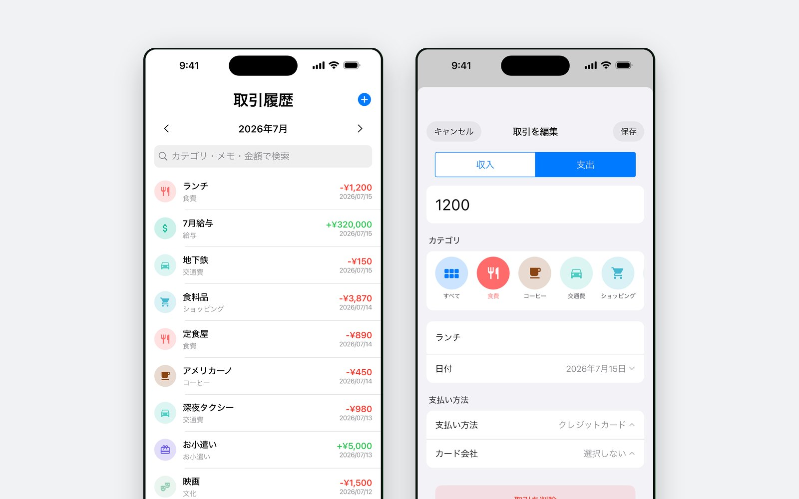
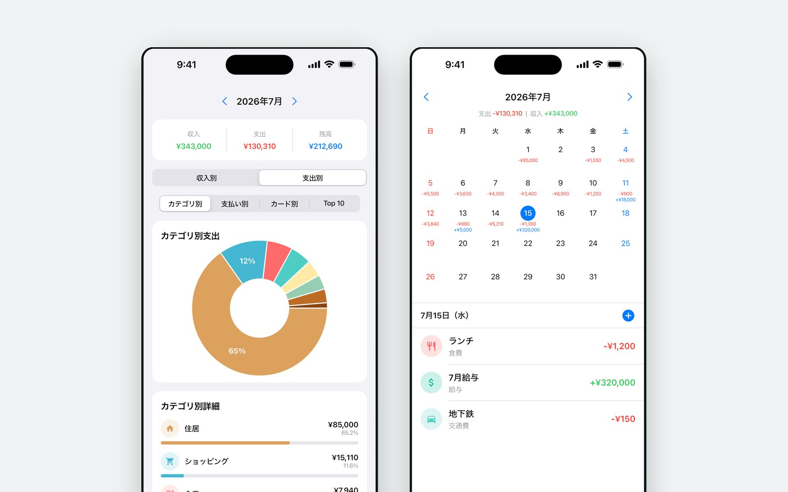
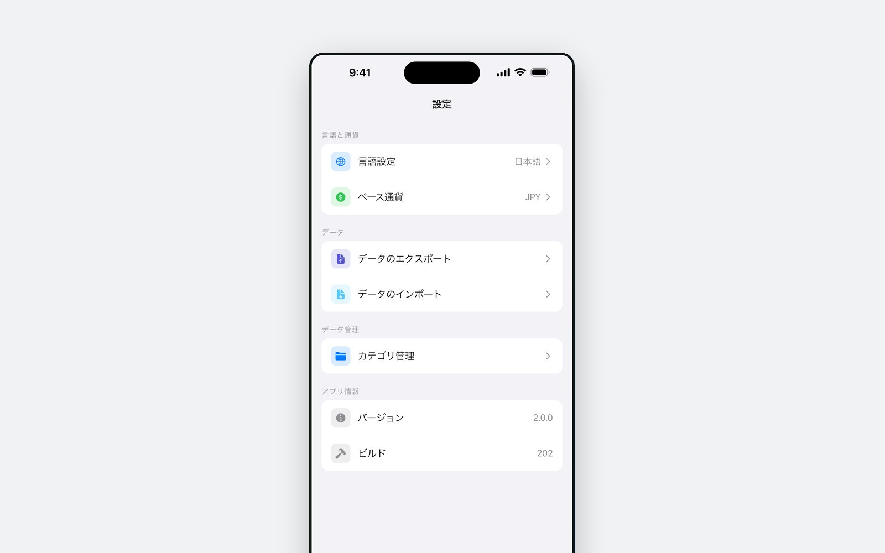

4タップで完了
日付、金額、カテゴリー、支払い方法。金額欄が電卓なので、割り勘の計算も別のアプリを開かずその場で終わります。
コーヒー1杯を4タップで — 日付、金額、カテゴリー、支払い方法。あとはドーナツグラフとカレンダーで、今月がどこへ行ったかを見ます。登録も口座連携もなく、記録は端末の外に出ません。

作った理由
コーヒー1杯を記録するのに1分30秒かかるからやめるのです。K-Pockitは、実際に使える1日20秒に合わせて作りました。入力画面が一番手前にあり、その20秒を延ばすもの — アカウント、口座連携、初期設定ウィザード — は入れていません。
入っているもの
日付、金額、カテゴリー、支払い方法。金額欄が電卓なので、割り勘の計算も別のアプリを開かずその場で終わります。
円で払って別の通貨で考えるなら、外貨の金額を入れればその日のレートで換算されます。11通貨を、必要なときだけ取得します。
カレンダーの日付の下に、その日の収入と支出が並びます。日付を押せばその日の記録だけを見られます。
カテゴリー別・支払い方法別・カード会社別のドーナツグラフ、使った額のTop 10、そして今月の収入・支出・残高。
今月全体、またはカテゴリー1つに上限を置きます。通知を送るためではなく、見に行くための機能です。
アイコンと色を選んでカテゴリーを追加できます。初期カテゴリーは出発点であって、固定された一覧ではありません。

どこから来たか
最初のバージョンは2026年4月にApp Storeへ。毎年1月に家計簿アプリを入れて2月にやめてしまう人のための帳簿でした。
2.0はその年の6月です。デザインを一新し、ドーナツ統計、カスタムカテゴリー、そして記録がアプリの中に閉じ込められないようCSV・JSON書き出しを加えました。
Android版は同じFlutterのコードです。クローズドテストを経て2026年9月にGoogle Playで公開しました。テスターが使ったものと同じビルドです。
プライバシー
記録を結び付けるアカウントも、送信するサーバーもありません。すべての取引は端末内のデータベースにあり、アプリを削除すれば一緒に消えます。外に出るのは、レートを尋ねるときに公開の為替サービスへ送る通貨コードだけです。本アプリは無料でバナー広告が入るため、Google AdMobが広告識別子と端末情報を収集します。詳細はすべてプライバシーポリシーに記載しています。
App StoreとGoogle Playで無料です。オフラインで動作し、ネットワークは広告と為替レートにしか使いません。
